🎯 Цели занятия
- Создать свою первую 3D-модель — дерево в Roblox Studio
- Научиться использовать инструменты Select, Move, Scale, Rotate
- Познакомиться со скриптами — что это и зачем они нужны
- Написать свой первый мини-скрипт для анимации дерева
| Этап занятия | Время | Что делаем |
|---|---|---|
| Введение | 5 мин | Знакомство с темой, просмотр результата |
| Создание ствола | 15 мин | Цилиндр, материал Wood, цвет, Scale |
| Создание веток | 10 мин | Дублирование ствола, Rotate, Scale |
| Создание листвы | 15 мин | Сфера, материал Grass, дублирование, Group |
| Сборка и закрепление | 10 мин | Group, Anchor, финальная сборка |
| Что такое скрипт? | 15 мин | Теория: скрипты в Roblox, Lua |
| Первый мини-скрипт | 15 мин | Пишем скрипт для вращения дерева |
| Опрос и итоги | 5 мин | Проверяем себя |
| Итого | 90 мин | — |
1 Инструменты — наши руки
Чтобы создать дерево, нужно уверенно владеть четырьмя главными инструментами. Вспомним их:
| Инструмент | Горячая клавиша | Что делает |
|---|---|---|
Select (Выбор)

|
Q | Выделяет объект |
Move (Перемещение)

|
W | Двигает по осям X, Y, Z |
Scale (Масштаб)

|
E | Меняет размер |
Rotate (Вращение)

|
R | Вращает вокруг оси |
Как открыть свойства объекта в Roblox Studio
- Выдели объект – кликни по нему в окне Workspace (3D-вид) или в Explorer (справа).
- Открой панель Properties – если её нет, включи через меню View → Properties (или нажми Ctrl+1).
- В панели Properties ты увидишь все параметры объекта:
Size,Anchored,BrickColor,Materialи другие.

Нажми на вопрос — Алиса ответит тебе прямо сейчас!
Просто скажи: «Алиса, как добавить скрипт в Roblox Studio?»
🔧 Какой инструмент?
Выбери правильный инструмент для действия:
Инструмент, который меняет размер объекта.
2 Строим дерево
Добавление реквизитов, таких как деревья и растения, делает игровую среду более реалистичной. В этом проекте ты научишься:
- создавать свои собственные объекты в Roblox Studio,
- использовать инструменты для изменения свойств объекта,
- группировать несколько объектов в одну модель.
Вот такая модель дерева у тебя получится:
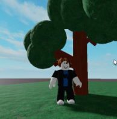
🧱 Задание 1 — Ствол дерева
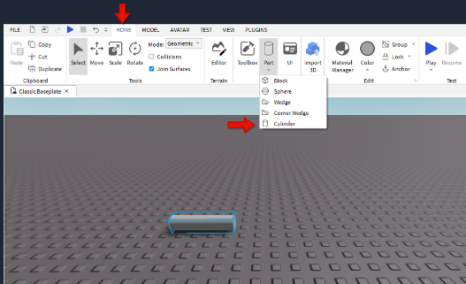
На вкладке Home найди фигуру Cylinder (цилиндр).
-
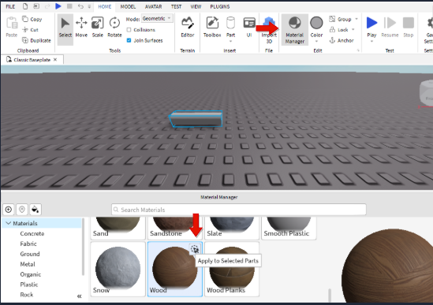
-
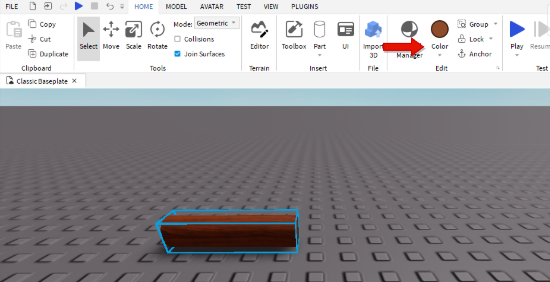
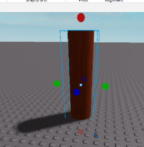
🌿 Задание 2 — Ветки дерева
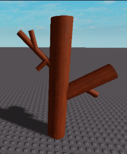
Добавь ветки, которые растут из ствола дерева.
🍃 Задание 3 — Листва дерева
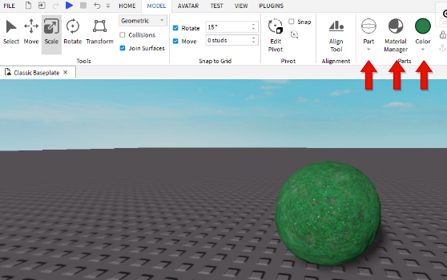
Для создания листвы тебе понадобится сфера (Sphere).
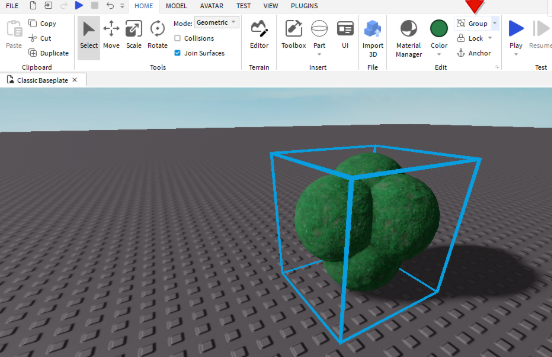
Сгруппируй листву при помощи кнопки Group на вкладке Model.
🔧 Задание 4 — Сборка и закрепление

Выдели все части дерева, затем нажми Group и Anchor.
Результат должен быть таким:
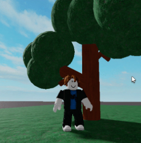
3 Что такое скрипт?
Скрипт — это программа, написанная на языке Lua, которая говорит игре, что делать. Скрипты оживляют игры: без них объекты просто стоят на месте.
| Тип скрипта | Где находится | Что делает |
|---|---|---|
| Script | Внутри объекта (Server) | Выполняется на сервере — для игровой логики |
| LocalScript | Внутри игрока (Client) | Выполняется на клиенте — для интерфейса |
| ModuleScript | В ReplicatedStorage | Хранит общий код для других скриптов |
Как добавить скрипт в Roblox Studio
- Выбери объект (например, твоё дерево) в Explorer (Проводник).
- Нажми на + (плюс) рядом с объектом или нажми Ctrl+Shift+S.
- Выбери Script — появится новый скрипт внутри объекта.
- Дважды кликни по скрипту — откроется редактор кода.
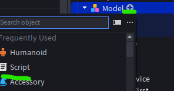
Основы языка Lua
| Код | Что делает |
|---|---|
print("Привет!") | Выводит текст в консоль (Output) |
wait(2) | Ждёт 2 секунды |
script.Parent | Обращается к родительскому объекту (тому, в котором лежит скрипт) |
object.Material = "Neon" | Меняет материал объекта на Neon |
object.BrickColor = BrickColor.new("Bright red") | Меняет цвет объекта |
💻 Задание 5 — Первый мини-скрипт для дерева
Давай оживим наше дерево! Мы напишем скрипт, который будет вращать дерево и менять цвет листвы.
while true do
for i, child in pairs(script.Parent:GetChildren()) do
if child:IsA("Part") then
child.BrickColor = BrickColor.random()
end
end
wait(0.3)
end1. while true do — бесконечный цикл (скрипт работает вечно).
2. script.Parent.Rotation — вращает дерево на 1 градус по оси Y каждый раз.
3. for child in pairs(...) — перебирает все части внутри дерева и меняет их цвет на случайный.
4. wait(0.3) — делает паузу 0.3 секунды, чтобы всё не происходило слишком быстро.
4 Дополнительные задания
🧩 Задание 1 — Проверь себя
Вопрос 1. Для чего нужны эти инструменты?
🧩 Задание 2 — Создай цветы
Создай такие цветы, используя изученную технику (сфера + цилиндр + дублирование).
Пример цветов:
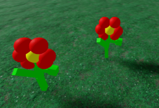
💭 Ты доволен своей работой?
Оцени свои ощущения:
🧩 Вопросы на закрепление
Какой инструмент изменяет размер?
Что делает команда Ctrl+D?
📝 Проверь себя
1. Какая клавиша дублирует объект?
2. Какой инструмент используется для вращения объекта?
3. Чтобы объект не падал, нужно включить свойство...
4. Что делает инструмент Scale (E)?
5. Что такое скрипт в Roblox?
6. Где находится список всех объектов в игре?
7. Для чего нужна команда Group?
8. Что делает wait(2) в коде?